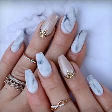

| Home | Contact us | About us | Services | Salon work |
Polish change-
Remove old polish from your nails.Trim, file and smooth your nails. Push back your cuticles. Apply a base coat to each nail and wait for it to dry. Apply the first thin coat of polish in three strokes and allow it to dry. Apply a second and/or third thin coat of polish in three strokes and let it dry. Apply an even layer of top coat to each nail and wait for it to dry.
Acrylic-
Apply the tips. Get the acrylic materials ready Pour the liquid acrylic into the acrylic dish, and pour some powder into a separate dish. Load the acrylic brush with acrylic. Apply the acrylic mixture to your nails. Let the acrylic dry. Apply polish.

Gel- Hard gel gets its name because, once cured, it is tough enough to be made into a nail extension. Nail extensions are artificial nails created by using a nail product to extend the nail past the edge of the natural nail. ... This includes gel polishes and thicker gels meant for gel-overlay services.
Fill in- Over time, acrylics grow out with your nails. Every two to three weeks, you should return to the salon to have your nails filled in. Your technician will gently file down the acrylic edge closest to your nail bed, then fill in the empty area between your nail bed and the existing acrylic nail
Nail removal- Nail is soaked off with acetone
Manicure- A manicure is a cosmetic beauty treatment for the fingernails and hands performed at home or in a nail salon. A manicure consists of filing and shaping the free edge, pushing and clipping any non living tissue, treatments with various liquids, massage of the hand, and the application of fingernail polish.
Pedicure- A pedicure is a cosmetic treatment of the feet and toenails, analogous to a manicure. Pedicures are done for cosmetic, therapeutic purposes. They are popular throughout the world, and especially among women.
Dip nails- Acrylic in a faster easier way